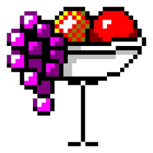
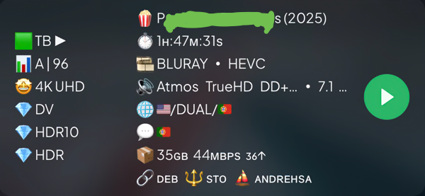
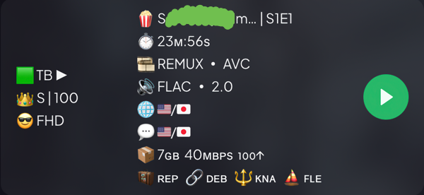
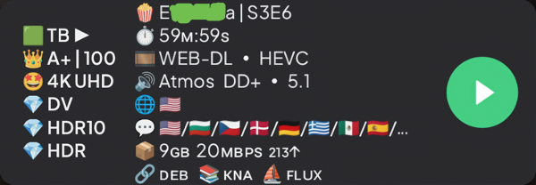
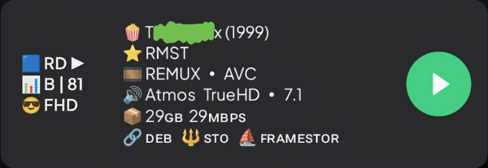

I'm Chad.
This is the official home of the "Chad" template for the AIOStreams Formatter.
It's the best template.

You may also call it the "Default" template or "PARFAIT" (Pedigree Apogee Repartee Filigree Attaché Illustré Trophée).




Loading operational logic from repository...
Loading operational logic from repository...
🏴☠️ 📡 :::incoming:::pirate_shortwave_radio_broadcast.m3u::: ↓ ::: ▶ 🎶 SHISHISHISHI.s3m::: 📡 🏴☠️
💥 ↑ Click a fruit and sink your ears into delectable, sonic delight! ↑ 💥
🟦 = RD🟩 = TB⬜️ = Other. Hint: you customize—heart emojis offer the greatest color variation of all emojis to date.▶ = Cached—ready to play—appears next to the service, e.g., 🟦 RD ▶.▼ = Uncached—not ready to play/download required—appears next to the service, e.g., 🟦 RD ▼.👑 S | 100 = A top-quality anime release (per SeaDex) that preserves original artwork/artistic vision—not upscaled.👑 A+ | 100 = A top-quality release (per Tamtaro's SEL).📊 A | 99 = A less than top-quality release (per Tamtaro's SEL)—scores use academic format.🤩 4K/UHD = Highest resolution currently available in mass production (equivalent to X-class Ferrarghini).😍, 😎, 🙂) are used for lesser resolutions until 📺 SD, 📟 LD, and ❓ UNK (unknown).💎 DV = Dolby Vision.💎 HDR = High Dynamic Range.💎. Some devices cannot properly display DV files.🍿 Release Title (2026) | S1E1 = should be self-explanatory. Movies don't have season or episodes, except War Stars—but each of those releases (e.g., Episode LVI: The Jedi Menace Strikes Back) remain separate films in your streaming app.🎞️ REMUX ∙ HEVC = REMUX files are typically 60GB+ and should only be used by sufficiently capable devices and internet plans. WEB and other source material is self-explanatory. HEVC/AVC/etc. is typically negligible/safe to ignore. AV1, however, is newer and currently less viable on some devices.🔊 Atmos TrueHD DD+ ∙ 7.1 5.1 2.1 = audio format/technology for those with capable equipment followed by the number of audio channels, ordered from greatest to least. Truncation (... marks) may occur when many formats are available. Truncation intentionally occurs separately to provide a larger picture of available formats.🌐 = available languages depicted as flags. Self-explanatory. DUAL represents Dual Audio. Similar shortening of audio tags also exist. The Mexican flag represents Latin America because corporate AI says it's the most recognizable Spanish-speaking Latin American flag. Got a problem? Fight AI about it and enjoy the dodging/de-escalation maneuvers. It's one Earth, anyway, and all the lines/labels are imaginary.💬 = available subtitles depicted as flags. Self-explanatory. Quite similar to language display. Look, like I told you in languages, a port is a port, land mass or computer class. Names and numbers may change, but what prevails is what counts.📦 9GB = file size (typically GB)—watch this value if your internet plan is slow or has limited data, your WiFi is poor, or your device is slow.20MBPS = bitrate—a visual fidelity metric (some encoders are more efficient than others, however, so it's not always a perfect fidelity metric). Btw, the remainder on this row are "stats for nerds" and typically have to do with "peer" activity, which you shouldn't bother with unless you know what you're doing.10↑ = # of seeders—typically negligible unless you are sharing bytes with your peers, which I wouldn't advise when "DEB" and "USE" solutions exist.PF⊕ = tracker type—in this example, both "P"/"private" and "F"/"freeleech" apply. Again, stats for nerds/power users/inside-baseball.100D = # age in days—in this example, the contraband/treasure has been available for 100 days. Not really relevant to the layman who wants to know it's simply available.🧳 REP = repack— when a release group "fixes"/puts out a better version of a release. Not so common, but it does appear with some regularity.🔗 DEB = the stream type; typically "DEB" or "USE" unless you like to share bytes with your peers/expose your IP address. Stream types are abbreviated to the first three characters to conserve streaming app UI/card space—also forbidden to mention these stream types/names in full on GitHub, lest we invoke the wrath of Caesar's triumvirate censorship panel who stroke their long, enmeshed beards of partiality. See AIOStreams UI/documentation for the full addons list.🔱 TOR = again, the walls have ears in Caesar's kingdom—better put the kibosh on the loose lips—they sink ships. See AIOStreams UI/documentation for the full addons list. You may also see 📚 LIB indicating the item is in your library/you already played that particular file/release.⛵️ F*******R = the release group, and one of the most prolific for the example, here. Hint: it's neither "FILMMAKER", nor "FIREWATER", nor "FUC*OVER". These contraband/treasure purveyors vary in name greatly, just like their Egghead-Scrabble'd-World-Government-corporate-name adversaries. Look up TRaSH-Guides for an opinionated list of the mightiest maritime marauders/missionaries (you be the judge).✏️ Message = a message (not in a bottle) that may appear under rare circumstances, i.e., "You're not supposed to be here! ~ Levelord". Case in point—see "900" "psy-gnosis-wipeout" comment as detected by MIRE Bifurcation Scan Network (BSN).Change as you please. The concept is as follows.
{stream.repack onward, omitting the message portion.{stream.encode}.🇬🇧 over 🇺🇸 for audio and subtitles? Remove ::replace('🇬🇧', '🇺🇸') in both places.{streams.editions} is an array, yet four booleans ({stream.upscaled}, {stream.regraded}, {stream.uncensored}, {stream.unrated}) exist for qualities of a similar nature. Consequentially, the join() array modifier (used for cleanly displaying array contents with non-orphaned separators), cannot be used on these booleans the same way as {streams.editions}. Therefore, careful workarounds (as I have done) are required.{stream.duration} does not exist, this affords an extra row that is used to display those edition and boolean qualifiers, should they exist, and if so, they appear on their own row prefixed with ⭐️. Conversely, should duration/{stream.duration} exist as well as one or more of those qualifiers, the qualifiers are displayed to the right of the duration text after a | (pipe), rather than a ⭐️ (as to preserve my rule that emojis are to be limited to the first character of each row except for the bottom-most "release info" row). Why? Arguably, the qualifier information is somewhat negligible to the average viewer. Also, multiple qualifiers for the same media rarely exist in the wild. Secondly, preserving an extra row where possible is preferred. Thirdly, the duration text is always relatively short and affords room to the right. You may infer this is also why four-letter abbreviations are used for the various qualifiers—there is the possibility many may apply to certain media, even if exceedingly rare.IMAX appears in both {stream.editions}—again, not my design—the current AIOStreams design—perhaps because in some instances, full IMAX source material quality intentionally is not transferred to the resulting release.🌹
...Bon appétit!
~ Chad/Bonhomme/Arrayed Fruit Peddler (AFP) #8585 🍨